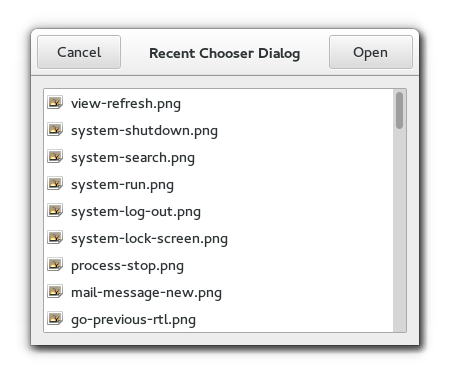

Gtk.RecentChooserDialog
Example
Methods
| Inherited: | Gtk.Dialog (14), Gtk.Window (117), Gtk.Bin (1), Gtk.Container (27), Gtk.Widget (256), GObject.Object (33), Gtk.Buildable (10), Gtk.RecentChooser (31) |
|---|
Virtual Methods
| Inherited: | Gtk.Dialog (2), Gtk.Window (5), Gtk.Container (10), Gtk.Widget (82), GObject.Object (7), Gtk.Buildable (10), Gtk.RecentChooser (13) |
|---|
Properties
| Inherited: | Gtk.Dialog (1), Gtk.Window (33), Gtk.Container (3), Gtk.Widget (38), Gtk.RecentChooser (10) |
|---|
Style Properties
| Inherited: | Gtk.Dialog (4), Gtk.Window (2), Gtk.Widget (17) |
|---|
Signals
| Inherited: | Gtk.Dialog (2), Gtk.Window (5), Gtk.Container (4), Gtk.Widget (69), GObject.Object (1), Gtk.RecentChooser (2) |
|---|
Fields
| Inherited: | Gtk.Dialog (1), Gtk.Window (1), Gtk.Bin (1), Gtk.Container (1), Gtk.Widget (1), GObject.InitiallyUnowned (3), GObject.Object (3) |
|---|
| Name | Type | Access | Description |
|---|---|---|---|
| parent_instance | Gtk.Dialog | r |
Class Details
- class Gtk.RecentChooserDialog(title=None, parent=None, manager=None, buttons=None, **kwds)
Bases: Gtk.Dialog, Gtk.RecentChooser
Gtk.RecentChooserDialog is a dialog box suitable for displaying the recently used documents. This widgets works by putting a Gtk.RecentChooserWidget inside a Gtk.Dialog. It exposes the #GtkRecentChooserIface interface, so you can use all the Gtk.RecentChooser functions on the recent chooser dialog as well as those for Gtk.Dialog.
Note that Gtk.RecentChooserDialog does not have any methods of its own. Instead, you should use the functions that work on a Gtk.RecentChooser.
## Typical usage ## {#gtkrecentchooser-typical-usage}
In the simplest of cases, you can use the following code to use a Gtk.RecentChooserDialog to select a recently used file:
<!-- language="C" --> GtkWidget *dialog; gint res; dialog = gtk_recent_chooser_dialog_new ("Recent Documents", parent_window, _("_Cancel"), GTK_RESPONSE_CANCEL, _("_Open"), GTK_RESPONSE_ACCEPT, NULL); res = gtk_dialog_run (GTK_DIALOG (dialog)); if (res == GTK_RESPONSE_ACCEPT) { GtkRecentInfo *info; GtkRecentChooser *chooser = GTK_RECENT_CHOOSER (dialog); info = gtk_recent_chooser_get_current_item (chooser); open_file (gtk_recent_info_get_uri (info)); gtk_recent_info_unref (info); } gtk_widget_destroy (dialog);
Recently used files are supported since GTK+ 2.10.